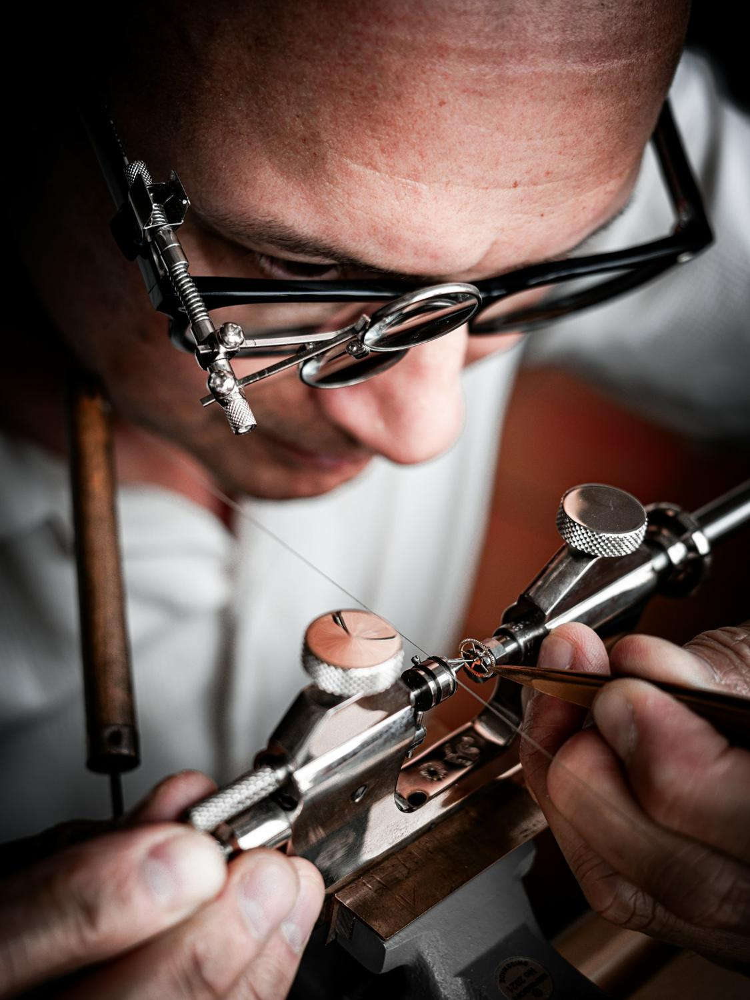
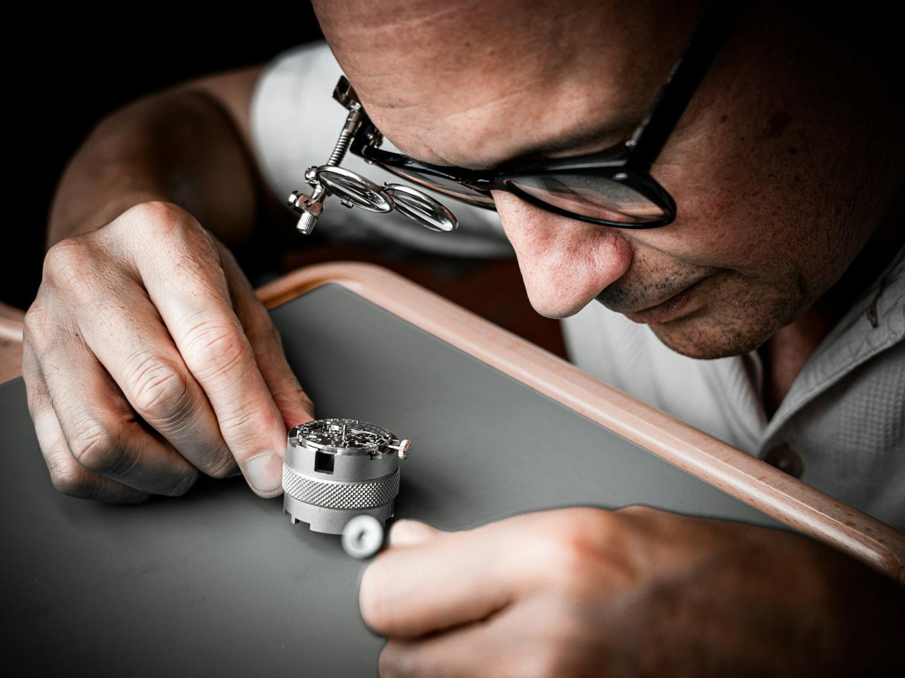

Craft · 8 November · 6 min
Why we still cut dials on a 1931 rose engine
A machine older than Indian independence, a lever moved by hand, and 120 passes for a single lehariya dial.
Portfolio project by Abhishek
Written by the people who make the watches. One story a fortnight, more when the rose engine misbehaves.

Latest · Craft
A machine older than Indian independence, a lever moved by hand, and 120 passes for a single lehariya dial.
Read the storyCraft · 8 November · 6 min
A machine older than Indian independence, a lever moved by hand, and 120 passes for a single lehariya dial.
History · 21 October · 5 min
Before clock towers, temples and courts measured the day with a copper bowl and a bucket of water. We named the maison after it.

Design · 30 September · 4 min
How a Rajasthani tie-dye became the pattern on our first watch.

Care · 12 September · 3 min
Thirty turns, once a day, at the same time. A short guide from the bench.

Atelier · 27 August · 5 min
Every Ghatika is assembled, regulated and cased by one watchmaker. Here is what those days look like.